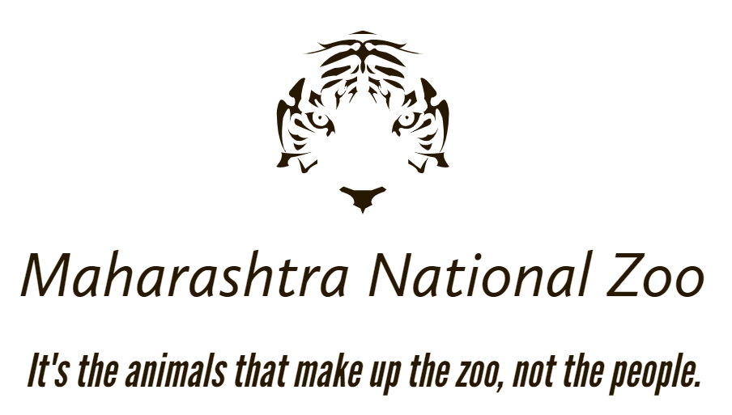
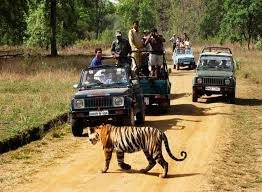

|  | ||||||||||||||
| Home | About | Safari Timings | Gallery | FAQ | Contact | |||||||||
|  | ||||||||||||||
Maharashtra National Zoo And Park - Safari Timings:The time of entry and exit for sanctuary are various according to the season. In winter , due to short perods of daylight hours, park entry time in the morningtakes place shortly after the sunrise and the time to exit of the park occurs before sunset. There are so harmful animals for Human Beings. | ||||||||||||||
Exact Time For People to Watch the Nature in the Sanctuary time is set below: | ||||||||||||||
| October 1st to October 31st | 06:30 A.M. to 10:00 A.M. | 02:30 P.M. to 06:30 P.M. |
| Novenber 1st to January 31st | 07:00 A.M. to 10:30 A.M. | 02:00 P.M to 04:00 P.M. |
| February 1st to Marchy 31st | 06:30 A.M. to 10:00 A.M. | 02:30 P.M to 06:00 P.M. |
| April 1st to May 15th | 06:00 A.M. to 09:00 P.M. | 03:00 P.M. to 06:00 P.M. |
| May 16th to June 13th | 06:00 A.M. to 09:30 P.M. | 03:00 P.M. to 07:00 P.M. |
Information about Safari timings and duration in Maharashtra National Park and Zoo is very important for All those planning to visit the park or zoo. The forest of Mahashtra is divided into 10 different zones for safari. By the way, all 10 safari zones of Maharashtra National Park are open for wildlife safari from 1 october to 30 june every year as per the entry time of the special season. But the even in monsoon (July to September),6 to 10 zones of the park are open for tourist for jungle safari.
The Maharashtra Tiger Reserve has a jungle safari shedule for visitors twice a day, one safari starts in the morning and another safari that in the afternoon. Usually, the time for opening and closing the park gate for jungle safari is according to sunrise and sunset for the morning safari and closes of an hour before sunset in the afternoon safari. Consiquently, the duration of the jungle safari at Maharashtra is approximately 3 to 3 and half hours in each shift.
It is important to remember the Time of jungle safari during the visit to Maharashtra park, as the forest department gives strict instruction to follow the safari time. As the time of sunrise and sunset change with the change of season in Maharashtra zoo and park also changes.
copyright © 2022. All Rights Reserved